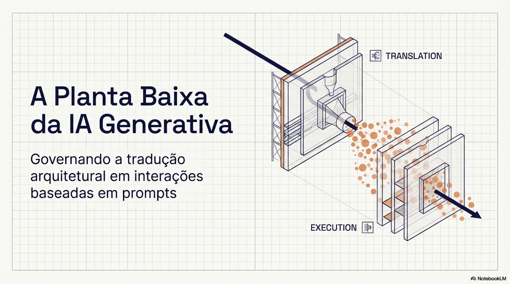
1. Introdução
A história da Interação Humano-Computador pode ser lida como uma sucessão de interfaces dominantes. Na era dos comandos, até cerca de 1980, o usuário precisava falar a língua da máquina por meio de uma interface de linha de comando determinística e de sintaxe rígida. A era das interfaces gráficas substituiu esse modelo pela navegação visual, em que o usuário passou a escolher entre as opções que o sistema oferecia. Com a era mobile, a interface tornou-se contextual e multimodal, combinando toque, voz, câmera e localização para se adaptar ao usuário e antecipar necessidades. Cada uma dessas transições trocou a interface anterior por outra mais acessível.
A chegada dos modelos de linguagem de grande escala segue uma lógica distinta. Em vez de substituir as interfaces anteriores, a linguagem natural passa a operar como uma camada de controle que as coordena: por trás de um pedido como "analise os dados e gere insights acionáveis", o sistema aciona e combina os modos de interação já existentes. O que muda não é apenas a forma de entrada, mas o regime de funcionamento, agora probabilístico, sensível à ambiguidade semântica e centrado na intenção do usuário, e não em uma sintaxe fixa. Essa camada de coordenação, e não o modelo em si, é o que precisa ser projetado e governado, e é nela que se concentram os desafios examinados neste trabalho.
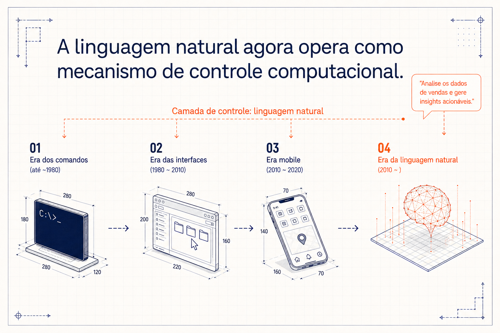
Em contextos organizacionais, prompts deixaram de ser apenas "entradas textuais" e passaram a operar como pontos de acoplamento entre intenção humana, arquitetura do sistema e cadeias de responsabilidade. Por isso, falhas em interações baseadas em prompts raramente são apenas "falhas de escrita": elas se manifestam como retrabalho, inconsistência, risco e dificuldade de justificativa institucional. A disseminação rápida desses sistemas em ambientes organizacionais reposicionou a engenharia de prompts como prática central de interação humano–máquina, em atividades que vão da análise de documentos à tomada de decisão assistida (Weisz et al., 2024). Nesse cenário, cresce a expectativa de que "escrever prompts melhores" seja suficiente para garantir qualidade, controle e eficiência no uso desses sistemas. Este trabalho sustenta que essa expectativa é insuficiente: em escala organizacional, o desempenho do prompting depende menos de habilidade individual e mais de mecanismos de mediação que tornem a tradução governável, rastreável e reutilizável.
Quando tratada predominantemente como habilidade textual ou competência individual, a engenharia de prompts mostra-se insuficiente para sustentar escalabilidade, governança e responsabilização em sistemas sociotécnicos complexos (Engeström, 2001; Weisz et al., 2024). Em ambientes organizacionais, a variabilidade de outputs, a dependência de conhecimento tácito e a dificuldade de auditoria revelam limites estruturais de abordagens centradas exclusivamente no usuário final (Subramonyam et al., 2024; Weisz et al., 2024). Um dos fatores centrais desse problema é a dificuldade recorrente de usuários em transformar intenções vagas em instruções executáveis de forma consistente. A literatura recente em HCI descreve esse fenômeno como o Golfo de Envisioning: uma lacuna cognitiva específica de interações baseadas em prompts, distinta dos tradicionais golfos de execução e avaliação (Subramonyam et al., 2024).
Respostas comuns a esse desafio tendem a enfatizar treinamento, letramento em prompting ou disseminação de boas práticas. Embora úteis em contextos individuais, essas estratégias apresentam limitações claras quando extrapoladas para uso organizacional em escala. Elas deslocam o ônus da mediação cognitiva para o usuário, reforçam desigualdades de expertise e tornam práticas críticas dependentes de tentativa e erro, dificultando padronização e governança (Norman, 1988; Weisz et al., 2024).
A engenharia de prompts deve ser reformulada como um problema arquitetural e sociotécnico, no qual a governança da tradução assume papel central (Engeström, 1987; Bitner et al., 2008). Em vez de tratar o prompt como artefato isolado, propõe-se compreender a interação baseada em prompts como um processo mediado por camadas intermediárias que interpretam, estruturam e normalizam intenções antes da execução pelo modelo. Essa perspectiva desloca o foco de outputs individuais para infraestruturas de tradução capazes de sustentar controle, auditabilidade e responsabilidade em serviços baseados em IA generativa.
Para sustentar esse argumento, o trabalho introduz uma separação explícita entre Tradução (T) e Execução (E). A Tradução corresponde à camada arquiteturalmente governável onde intenções humanas são interpretadas, refinadas e transformadas em instruções estruturadas. A Execução refere-se à geração probabilística realizada pelos modelos de linguagem, cuja variabilidade não pode ser totalmente eliminada, mas pode ser contextualizada e gerida (Weisz et al., 2024; Subramonyam et al., 2024). Essa distinção permite analisar com maior precisão o que pode ser projetado e controlado sem confundir variabilidade de output com falha de design.
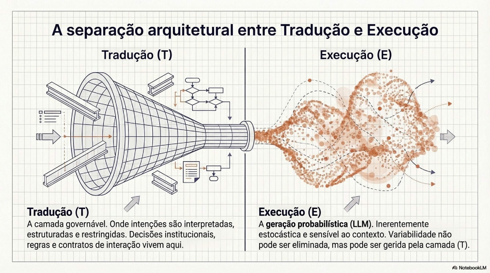
Este trabalho oferece três contribuições principais:
- Um enquadramento conceitual que separa Tradução (T) de Execução (E) para analisar o que pode ser projetado, governado e auditado em serviços baseados em prompts, sem exigir determinismo irrealista da geração.
- Dois instrumentos analíticos derivados, SOP e GenAI Service Blueprint, que classificam funções de prompts por camadas de serviço e tornam visível a mediação entre usuários, organização e modelos.
- Um estudo de caso observacional de um Cognitive Prompt Middleware (CPM), incluindo uma instância baseline (Prompt Assistant) e variações arquiteturais, complementado por evidências aplicadas e um protocolo leve de validação.
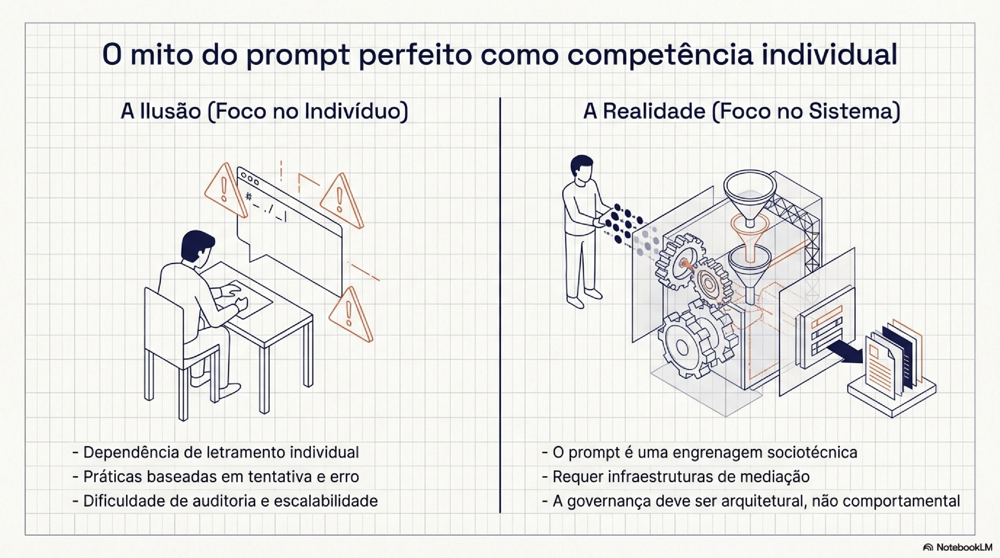
2. Enquadramento teórico: prompting como interação sociotécnica
Esta seção posiciona a engenharia de prompts no campo da HCI e da análise de sistemas sociotécnicos, afastando leituras que a tratam como técnica isolada, habilidade linguística ou competência exclusivamente individual. O objetivo é demonstrar que os desafios observados no uso organizacional de sistemas de IA generativa decorrem menos de limitações técnicas dos modelos e mais de lacunas estruturais de mediação entre intenção humana, arquitetura do sistema e execução probabilística (Subramonyam et al., 2024; Engeström, 1987).
2.1 Prompting como prática de interação em HCI
Pesquisas recentes em HCI têm enfatizado que interações baseadas em prompts devem ser compreendidas como processos interativos, e não como comandos pontuais ou entradas estáticas. Nessa perspectiva, prompts operam como artefatos mediadores, moldando não apenas os outputs gerados, mas também expectativas, estratégias de uso, ciclos de iteração e percepções de controle por parte dos usuários (Subramonyam et al., 2024). Essa leitura desloca o foco da qualidade textual do prompt para as dinâmicas de interação estabelecidas ao longo do tempo. Em contextos organizacionais, no entanto, essas dinâmicas são atravessadas por prazos, responsabilidades institucionais, normas internas e riscos regulatórios. Como consequência, práticas de prompting baseadas em experimentação ad hoc tornam-se frágeis, difíceis de escalar e pouco compatíveis com exigências de governança e responsabilização (Weisz et al., 2024).
2.2 O Golfo de Envisioning e as lacunas de mediação
Um conceito central para compreender essas fragilidades é o Golfo de Envisioning, proposto na literatura recente como uma lacuna cognitiva específica das interações baseadas em prompts com sistemas de IA generativa. Diferentemente dos tradicionais golfos de execução e avaliação propostos por Norman (1988), o Golfo de Envisioning, descrito por Subramonyam et al., refere-se às dificuldades que antecedem a interação propriamente dita, quando usuários precisam antecipar possibilidades, formular instruções e calibrar expectativas antes de qualquer resposta do sistema (Subramonyam et al., 2024). Esse golfo pode ser analisado como composto por três lacunas inter-relacionadas:
- Lacuna de capacidade: o usuário desconhece o repertório de tarefas em que o sistema pode operar com proveito;
- Lacuna de instrução: o usuário não dispõe do vocabulário nem da forma para estruturar pedidos compatíveis com a lógica do modelo;
- Lacuna de expectativa: o usuário não tem como antecipar a variabilidade de um sistema estocástico nem calibrar o que é desvio aceitável e o que é falha.
Essas lacunas não são atribuídas a déficits cognitivos individuais, mas à ausência de mecanismos de mediação que tornem explícitas as capacidades do sistema, apoiem a formulação progressiva de instruções e ajudem a calibrar expectativas em relação ao comportamento probabilístico dos modelos. Em contextos organizacionais, onde erros têm consequências distribuídas e decisões precisam ser justificáveis, o Golfo de Envisioning torna-se particularmente crítico, comprometendo previsibilidade, controle e auditabilidade das interações (Subramonyam et al., 2024; Weisz et al., 2024).
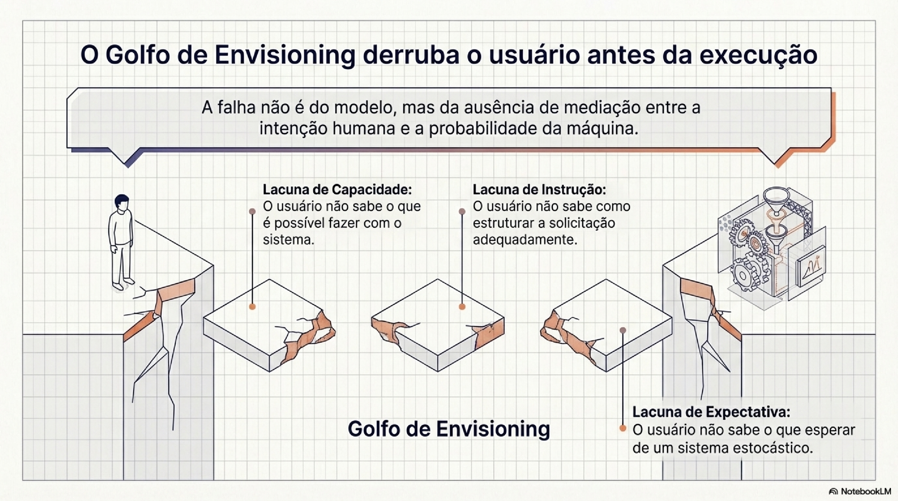
2.3 Hierarquias cognitivas de prompting e limites do letramento
Propostas recentes descrevem estratégias de prompting em níveis crescentes de estruturação e demanda cognitiva, organizando tipos de prompt em uma hierarquia que permite caracterizar a complexidade de tarefas e comparar abordagens de interação com LLMs. A Hierarchical Prompting Taxonomy (HPT), por exemplo, estrutura estratégias de prompting de forma hierárquica com base em princípios cognitivos e propõe instrumentos para avaliar a relação entre estratégia e exigência da tarefa (Budagam et al., 2024).
Estudos sobre uso real mostram que muitos usuários permanecem presos aos níveis mais baixos dessa hierarquia, recorrendo a formulações simples e pouco estruturadas mesmo diante de tarefas que exigiriam estratégias mais elaboradas. Esses padrões, contudo, não devem ser interpretados como incapacidade individual. A própria literatura destaca que níveis mais altos de estruturação raramente emergem espontaneamente e dependem de scaffolding explícito, exemplos ou mediação fornecida pelo sistema. Na ausência desses mecanismos, usuários permanecem operando em níveis baixos da hierarquia, independentemente de sua experiência geral ou domínio do problema (Subramonyam et al., 2024). Embora a HPT seja útil para caracterizar demandas cognitivas, ela não aborda diretamente como essas estratégias se integram a serviços organizacionais, nem como se relacionam com decisões de governança, responsabilidade e escalabilidade, lacuna que reforça a necessidade dos instrumentos desenvolvidos na Seção 3.
2.4 Além do letramento individual: uma perspectiva sociotécnica
Grande parte das respostas práticas aos desafios do prompting concentra-se em treinamento, disseminação de boas práticas ou aumento do letramento individual dos usuários. Embora essas abordagens possam melhorar a interação em nível local, elas apresentam limitações significativas em ambientes organizacionais, em que usuários mudam com frequência, o tempo de aprendizagem é apertado, decisões precisam ser auditáveis e erros produzem efeitos institucionais distribuídos.
Ao deslocar o problema para o indivíduo, essas estratégias ignoram o caráter sistêmico e sociotécnico da interação com IA generativa, reforçando desigualdades de expertise e tornando práticas críticas dependentes de conhecimento tácito e improvisação (Engeström, 2001; Weisz et al., 2024). Sob a perspectiva da Teoria da Atividade, interações baseadas em prompts devem ser compreendidas como parte de sistemas de atividade mais amplos, nos quais ferramentas, regras, divisão de trabalho e objetivos se articulam dinamicamente (Engeström, 1987).
2.5 Implicações para a engenharia de prompts
O enquadramento apresentado nesta seção sustenta a tese central do paper: a necessidade de camadas arquiteturais de mediação que apoiem a externalização da intenção, reduzam variabilidade indesejada e tornem governáveis práticas de prompting em escala organizacional. Em vez de depender exclusivamente do letramento individual, sistemas de IA generativa devem incorporar mecanismos que institucionalizem decisões de tradução e tornem explícitos critérios, restrições e expectativas. A seção seguinte apresenta dois instrumentos analíticos concebidos com esse objetivo: a Taxonomia de Prompt Orientada a Serviço (SOP) e o GenAI Service Blueprint.
3. Instrumentos analíticos: taxonomia de prompt orientada a serviço (SOP) e GenAI Service Blueprint
Esta seção apresenta os instrumentos analíticos utilizados ao longo do artigo para examinar práticas de prompting em contextos organizacionais. Diferentemente de frameworks normativos ou métodos prescritivos, esses instrumentos são concebidos como lentes analíticas derivadas, voltadas a tornar visíveis dimensões estruturais frequentemente ocultas nas interações baseadas em prompts. Ambos operam em continuidade com o enquadramento sociotécnico discutido na Seção 2, articulando contribuições de HCI, Teoria da Atividade e Design de Serviço (Engeström, 1987; Bitner et al., 2008).
3.1 Da interação isolada ao serviço de IA generativa
Em ambientes organizacionais, interações com sistemas de IA generativa raramente ocorrem de forma isolada. Prompts entram em fluxos de trabalho, circulam entre equipes, são adaptados a políticas internas e dependem de requisitos de rastreabilidade. Nesses contextos, a interação baseada em prompts passa a operar como parte de um serviço, e não apenas como evento pontual entre usuário e modelo (Bitner et al., 2008).
O Design de Serviço oferece instrumentos conceituais particularmente adequados para analisar esse deslocamento. Ao distinguir entre frontstage, backstage e linha de visibilidade, essa abordagem permite explicitar como decisões de interação, mediação e governança são distribuídas ao longo do serviço. Aplicada a sistemas de IA generativa, essa perspectiva evidencia a existência de uma camada intermediária de tradução, na qual intenções humanas são interpretadas e estruturadas antes da execução pelo modelo.
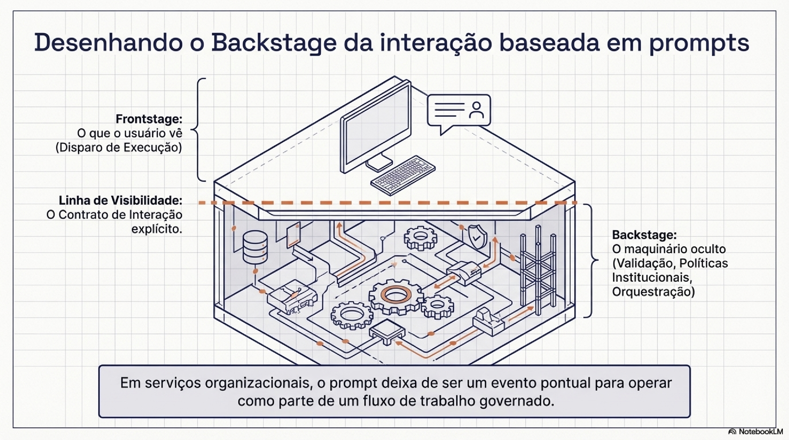
3.2 Taxonomia de Prompt Orientada a Serviço (SOP)
A Taxonomia de Prompt Orientada a Serviço (SOP) é proposta como um instrumento analítico para classificar prompts segundo a função que desempenham dentro de um serviço baseado em IA generativa, e não segundo sua forma textual ou complexidade linguística. Inspirada pela lógica do service blueprint e pela análise sociotécnica de sistemas de atividade, a SOP organiza prompts em relação a três grandes camadas: frontstage, linha de visibilidade e backstage (Bitner et al., 2008; Engeström, 1987). Essa organização não implica hierarquia de qualidade nem prescrição de boas práticas, mas oferece uma estrutura para descrever e comparar arquiteturas de prompting em contextos organizacionais.
Nota: A sigla SOP deriva do inglês Service-Oriented Prompt Taxonomy, mantido por concisão ao longo do texto. No contexto organizacional bancário, não deve ser confundida com Standard Operating Procedure.
Tabela 1 — SOP: funções de prompts por camada de serviço
| Camada de Serviço | Função do Prompt (SOP) | Descrição Analítica | Exemplo Abstrato |
|---|---|---|---|
| Frontstage | Disparo de execução | Prompt que aciona diretamente a geração de output, com mínima mediação e baixa explicitação de critérios ou restrições | "Resuma este documento." |
| Frontstage | Solicitação orientada a objetivo | Prompt que expressa uma intenção explícita, mas delega ao modelo a definição de critérios, estrutura e abordagem | "Explique este processo para um cliente." |
| Linha de Visibilidade | Contrato de interação | Prompt que explicita objetivo, formato, escopo e limites esperados do output, tornando critérios visíveis ao usuário | "Compare X e Y destacando diferenças operacionais em formato de tabela." |
| Backstage | Scaffold cognitivo | Prompt que estrutura, refina ou externaliza a intenção do usuário antes da execução | "Antes de responder, identifique os critérios relevantes para a comparação." |
| Backstage | Controle e validação | Prompt que impõe regras, checagens ou restrições à geração, reduzindo variabilidade indesejada | "Verifique consistência interna e evite inferências não justificadas." |
| Backstage | Mediação organizacional | Prompt que traduz políticas, normas ou diretrizes institucionais em instruções executáveis | "Aplique diretrizes internas de conformidade ao formular a resposta." |
| Backstage | Orquestração de execução | Prompt que coordena múltiplas etapas ou subtarefas antes da geração do output final | "Divida a tarefa em etapas e execute cada uma sequencialmente." |
3.3 Funções analíticas da SOP
As funções identificadas pela SOP cobrem desde o disparo direto, em que o prompt apenas aciona a geração, até a mediação organizacional, em que diretrizes institucionais são traduzidas em instruções executáveis. Entre esses extremos operam o contrato de interação (objetivos, formatos e limites explicitados), o scaffold cognitivo (intenção do usuário estruturada antes da execução) e o controle e validação (regras e restrições impostas à geração). Cada uma dessas funções realoca de forma distinta responsabilidades entre usuário, organização e modelo.
Ao tornar essas funções visíveis, a SOP explicita decisões arquiteturais que normalmente permanecem implícitas na interação textual. Essa visibilidade é o que permite distinguir, em discussões de governança, o que é variação inerente à execução probabilística do que é escolha deliberada de mediação.
3.4 GenAI Service Blueprint
Complementarmente à SOP, o GenAI Service Blueprint estende o blueprint clássico do Design de Serviço para contemplar especificidades dos sistemas de IA generativa. Em particular, ele explicita a camada de tradução situada entre a intenção do usuário e a execução pelo modelo, articulando ações visíveis, processos de bastidores e mecanismos de governança (Bitner et al., 2008). Ao mapear onde e como a tradução ocorre, o GenAI Service Blueprint permite discutir em que pontos decisões são tomadas, quais critérios são explicitados ou ocultados e como responsabilidades se distribuem entre usuários, organização e sistema.
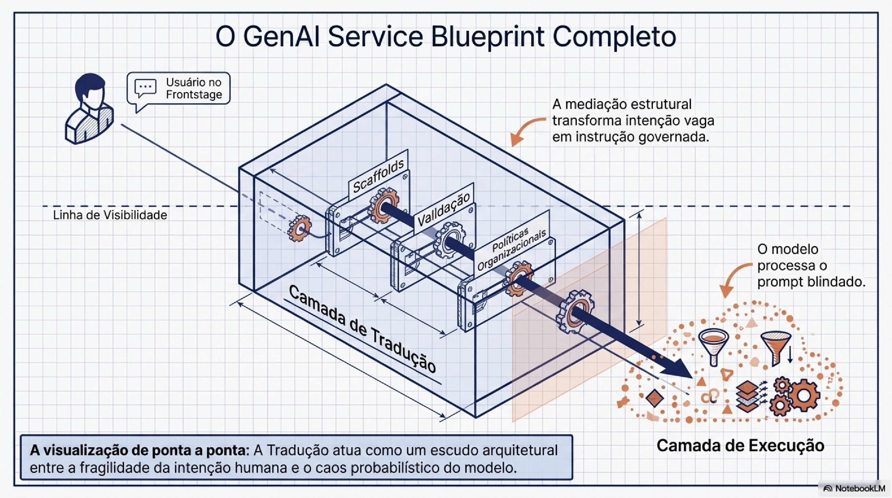
3.5 Relação entre SOP e GenAI Service Blueprint
Embora distintos, a SOP e o GenAI Service Blueprint operam de forma complementar. Enquanto a SOP classifica funções de prompts no interior do serviço, o blueprint explicita processos e relações entre camadas, atores e artefatos. Juntos, esses instrumentos permitem analisar não apenas o que os prompts fazem, mas onde e como suas funções se articulam na arquitetura do serviço. No caso do CPM (Seção 5), a SOP e o GenAI Service Blueprint foram usados como lentes para identificar (i) funções predominantes de prompting por instância e (ii) onde a camada de tradução se posiciona entre frontstage e backstage. Recortes ilustrativos de outputs comparáveis para um mesmo input estão no Anexo A.
3.6 Limites e escopo dos instrumentos
É importante ressaltar que tanto a SOP quanto o GenAI Service Blueprint são instrumentos analíticos situados. Eles não pretendem esgotar a diversidade de práticas de prompting, nem prescrever arquiteturas ideais. Seu valor reside em oferecer uma linguagem comum para descrever, comparar e discutir decisões arquiteturais em serviços de IA generativa, especialmente em contextos organizacionais onde governança e responsabilização são centrais (Engeström, 2001).
4. Contexto técnico: controle, governança e limites dos modelos de IA generativa
Esta seção delimita o contexto técnico no qual a governança da tradução se torna não apenas desejável, mas possível. O objetivo não é descrever modelos específicos em detalhe, nem comparar desempenhos, mas explicitar quais capacidades técnicas tornam analisável e projetável a camada de tradução, bem como quais limites permanecem intrínsecos à execução probabilística dos sistemas de IA generativa (Weisz et al., 2024; Subramonyam et al., 2024).
4.1 Controle comportamental e variabilidade probabilística
Modelos contemporâneos de linguagem operam por processos estocásticos, o que produz variabilidade inerente nos outputs. Essa característica é propriedade fundamental desses sistemas, não falha técnica. A distinção importante, frequentemente confundida, é entre influenciar o comportamento do modelo (possível, via instruções e parâmetros) e controlar o resultado específico de uma execução, que permanece probabilístico. Quando essas duas dimensões se confundem, surgem expectativas irreais de determinismo e avaliações equivocadas de falhas em sistemas baseados em IA generativa (Norman, 1988).
4.2 A separação entre Tradução (T) e Execução (E)
A distinção proposta neste trabalho entre Tradução (T) e Execução (E) oferece um enquadramento analítico para lidar com essa tensão entre controle e variabilidade. A Tradução corresponde à camada na qual intenções humanas são interpretadas e estruturadas em instruções compatíveis com a lógica do sistema. Essa camada é arquiteturalmente governável, pois envolve decisões explícitas de design, regras, contratos de interação e mediações institucionais. A Execução, por sua vez, refere-se ao processamento realizado pelo modelo de linguagem, caracterizado por geração probabilística e sensibilidade a fatores contextuais. Essa separação permite deslocar esforços de governança para a camada onde o controle é efetivamente possível, sem exigir determinismo da geração (Subramonyam et al., 2024; Weisz et al., 2024).
Nota: Neste trabalho, "auditabilidade" refere-se primariamente à rastreabilidade e justificabilidade das decisões tomadas na camada de Tradução (T), incluindo critérios, contratos, restrições e validações aplicadas. Não se refere à explicação causal de por que um modelo específico gerou um output particular na Execução (E).
4.3 Camadas de controle e governança na interação
Do ponto de vista técnico, sistemas de IA generativa contemporâneos operam a partir de múltiplas camadas de controle, que incluem instruções persistentes, parâmetros de sistema, restrições de conteúdo e mecanismos de validação. Quando essas capacidades são tratadas apenas como configurações técnicas, perde-se a oportunidade de analisá-las como decisões sociotécnicas. Ao serem incorporadas à camada de Tradução, essas decisões tornam-se visíveis, discutíveis e passíveis de governança, permitindo que organizações explicitem critérios, responsabilidades e limites de uso (Engeström, 2001; Bitner et al., 2008).
4.4 Limites técnicos e riscos de interpretação
Apesar desses avanços, é fundamental reconhecer os limites técnicos dos sistemas de IA generativa. A execução permanece sensível a variações de contexto, dados de treinamento e formulação das instruções. Além disso, a opacidade parcial dos modelos dificulta explicações causais diretas sobre outputs específicos, reforçando a necessidade de cautela na atribuição de responsabilidade (Weisz et al., 2024). Nesse sentido, tratar prompts ou configurações de sistema como garantias de comportamento determinístico constitui um risco conceitual e prático. A governança da tradução não elimina incertezas, mas as desloca para um espaço onde podem ser reconhecidas, documentadas e geridas.
4.5 O papel de modelos específicos como casos expressivos
Este trabalho recorre a modelos contemporâneos de IA generativa como casos expressivos que tornam visíveis capacidades e limites relevantes para a análise proposta. Essa escolha não implica dependência ontológica de um modelo específico, nem a suposição de que os instrumentos analíticos apresentados sejam válidos apenas para determinada tecnologia. Ao contrário, o foco permanece na camada de tradução, que pode ser projetada, governada e adaptada independentemente da evolução dos modelos subjacentes (Subramonyam et al., 2024).
4.6 Implicações para o design de serviços baseados em IA generativa
Ao explicitar capacidades e limites técnicos, esta seção reforça a necessidade de tratar a engenharia de prompts como parte do design de serviços, e não como ajuste periférico. A possibilidade de condicionar comportamento sem garantir determinismo exige arquiteturas que tornem visíveis decisões de tradução, distribuam responsabilidades e reduzam dependência de improvisação individual. A Seção 5 descreve como essa distinção entre Tradução e Execução é operacionalizada no estudo de caso do CPM.
5. Metodologia e estudo de caso: CPM (Cognitive Prompt Middleware)
Esta seção descreve a abordagem metodológica adotada no trabalho e apresenta o CPM (Cognitive Prompt Middleware) como estudo de caso observacional. O objetivo não é avaliar desempenho comparativo de modelos nem demonstrar causalidade estatística, mas examinar a plausibilidade operacional de institucionalizar a tradução como camada governada em serviços organizacionais baseados em IA generativa (Engeström, 1987; Bennett & Checkel, 2014).
5.1 Abordagem metodológica
O estudo adota uma abordagem qualitativa e observacional, inspirada em princípios de análise sociotécnica e process tracing leve. Em vez de isolar variáveis ou medir outputs de forma quantitativa, a análise concentra-se em como práticas de prompting são organizadas, mediadas e governadas em um contexto real de uso organizacional (Engeström, 2001). A análise combina observação situada do uso do CPM em tarefas de curadoria, rastros agregados de uso (volume de conversas ao longo do período de adoção), evidências aplicadas de esforço e economia reportadas no recorte de uso recorrente, e artefatos de interação (metaprompts e outputs) utilizados como material ilustrativo para tornar visível a camada de Tradução (T).
Nota metodológica: Por restrições de confidencialidade, não reportamos conteúdo sensível nem estimativas de usuários únicos; e distinguimos explicitamente "conversa" de "contrato de tradução estabilizado". Evidências empíricas são utilizadas de forma contextual, como suporte à argumentação conceitual, e não como prova conclusiva de eficácia (Bennett & Checkel, 2014).
Nota de posicionalidade: Neste estudo, o autor acumula o duplo papel de designer e pesquisador, tendo concebido e implementado o CPM e, agora, analisado seus efeitos. Esse arranjo cria risco de viés de confirmação, já que a mesma pessoa define o que conta como sucesso e interpreta a evidência. Para mitigar esse risco, a análise apoia-se em rastros de uso registrados de forma independente da intenção do designer (volume e continuidade de conversas), em gabaritos construídos por terceiros nas tarefas de validação e em uma adoção orgânica não controlada pelo autor, sem campanhas de evangelização. Nenhuma dessas mitigações elimina o viés; elas tornam o posicionamento explícito e sujeito a escrutínio.
5.2 Separação analítica entre Tradução (T) e Execução (E)
A análise metodológica é estruturada a partir da separação explícita entre Tradução (T) e Execução (E), conforme definido na Seção 4.2. No estudo de caso, a Tradução é tratada como espaço primário de governança, documentável, auditável e ajustável, enquanto a Execução é tratada como componente cujo comportamento deve ser contextualizado e gerido (Subramonyam et al., 2024; Weisz et al., 2024).
5.3 O CPM como instância arquitetural
O CPM (Cognitive Prompt Middleware) é uma instância arquitetural projetada para operar como camada intermediária de tradução entre usuários, organização e modelos de IA generativa. Foi implementado pelo autor entre 2024 e 2025 como agente baseado em GPT em um banco brasileiro de varejo, atendendo equipes de curadoria de bases de conhecimento usadas em chatbots de atendimento. O contexto organizacional, com suas restrições de confidencialidade, ciclos de validação interna e perfis heterogêneos de usuários, é parte indissociável do caso. Nessa implementação, o CPM centraliza funções de mediação identificadas pela SOP, incluindo contratos de interação, scaffolding cognitivo, controle e tradução de diretrizes organizacionais.
O CPM não substitui o modelo subjacente nem altera seus mecanismos internos. Seu papel é estruturar a interação, tornando explícitas decisões que, em abordagens tradicionais, permanecem distribuídas entre prompts improvisados, conhecimento tácito e tentativa e erro individual. Essa centralização permite discutir governança da tradução como decisão arquitetural, e não como habilidade pessoal.
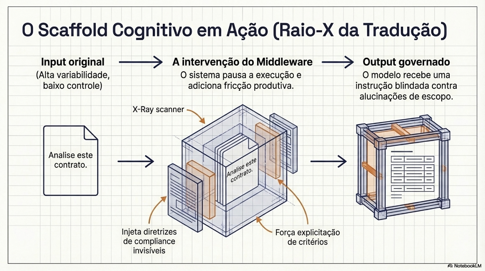
5.4 Instâncias empíricas do CPM
Para explorar diferentes trade-offs arquiteturais, o CPM foi implementado em três instâncias empíricas, cada uma enfatizando escolhas distintas em termos de fricção interacional, grau de governança e autonomia do usuário. A primeira instância, batizada de Prompt Assistant em 2024, foi concebida como baseline: baixa fricção, foco em eficiência operacional. A segunda, Prompt Tutor, fez o oposto e introduziu fricção deliberada na forma de perguntas de refinamento, operando como scaffold cognitivo. A terceira, SuperPrompt Assistant, voltou-se para tarefas complexas e de baixa tolerância a erro, com alto grau de controle estrutural e governança explícita. O Prompt Tutor, em particular, surgiu de uma observação recorrente em curadoria: pedidos vagos produziam outputs que o curador depois rejeitava, e o esforço migrava para o fim do fluxo em vez de ficar no começo.
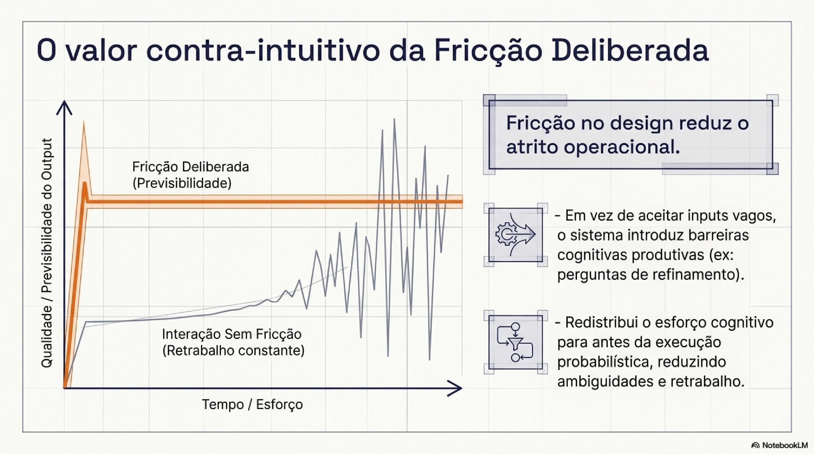
5.5 Critérios analíticos e comparação entre instâncias
A comparação entre as instâncias do CPM é conduzida a partir de critérios derivados da SOP e do enquadramento sociotécnico do trabalho.
Tabela 2 — Comparação entre instâncias do CPM
| Critério | Prompt Assistant | Prompt Tutor | SuperPrompt Assistant |
|---|---|---|---|
| Papel arquitetural | Baseline de tradução governada | Scaffold cognitivo com fricção deliberada | Tradução de alta governança |
| Funções SOP predominantes | Contrato de interação; orquestração básica | Scaffold cognitivo; contrato de interação | Contrato de interação; controle e validação; mediação organizacional |
| Fricção interacional | Baixa | Alta (intencional) | Baixa–média |
| Governança explícita | Média | Média–alta | Alta |
| Uso observado | Tarefas operacionais e exploratórias; eficiência e padronização; redução de variação superficial | Tarefas abertas ou mal especificadas; clarificação de intenção; aprendizagem; redução de ambiguidade | Tarefas complexas e multi-etapa; baixa tolerância a erro; previsibilidade estrutural; controle institucional |
5.6 Evidência empírica e limites da análise
O uso do CPM em ambiente organizacional permitiu observar redução de retrabalho, maior previsibilidade estrutural e economia significativa de tempo em tarefas complexas. Os resultados são mencionados como evidência empírica contextual, e não como prova quantitativa controlada. O estudo não busca estabelecer relações causais nem generalizar resultados para outros contextos sem mediação adicional. O valor do estudo reside em demonstrar que a governança da tradução pode ser operacionalizada na prática, e não em medir sua eficácia relativa em termos absolutos (Bennett & Checkel, 2014).
5.7 Considerações metodológicas finais
Ao combinar separação analítica entre Tradução e Execução, instrumentos analíticos derivados (SOP e GenAI Service Blueprint) e um estudo de caso observacional, a metodologia adotada permite examinar práticas reais de prompting sob uma lente arquitetural e sociotécnica. Essa abordagem privilegia clareza conceitual, transparência de decisões e plausibilidade operacional, preparando o terreno para a discussão das implicações mais amplas apresentada na seção seguinte.
6. Evidências aplicadas: custo de maturação (T), ganho em uso recorrente e gate de validação
Esta seção apresenta evidências aplicadas situadas e um protocolo leve de validação que sustentam a tese central do trabalho: em contextos organizacionais, ganhos com GenAI não dependem apenas da capacidade do modelo nem do letramento individual em prompting, mas da governança da tradução, isto é, de uma camada (T) que estrutura intenção, explicita critérios e impõe restrições antes da Execução (E). As métricas e procedimentos abaixo devem ser lidos como evidência aplicada situada, conforme os limites metodológicos descritos em §5.1.
6.1 Custo de maturação (Tradução, T): ~4 horas por prompt
Na curadoria, um custo relevante não está apenas na execução do modelo, mas no tempo e esforço até estabilizar um prompt confiável e consistente, aqui entendido como um contrato de interação (papel, objetivo, restrições, passos e formato) cujo output se torna comparável ao baseline humano sob critérios definidos e apresenta menor variabilidade quando executado sob configurações do modelo definidas pelo serviço.
Esse ponto corresponde à maturidade da Tradução (T): o momento em que o contrato fica suficientemente especificado para reduzir refinamentos adicionais e permitir reuso consistente em tarefas equivalentes. Em agentes de curadoria, estimamos um custo médio de ~4 horas por prompt até a maturação do contrato, considerando o esforço total de criação, iterações, validações e ajustes no fluxo de trabalho.
Nota: Esse valor descreve o custo de "fabricar" a infraestrutura do serviço (T), e não o efeito acumulado em uso recorrente (E).
6.2 Ganho em uso recorrente: economia após o prompt estar pronto
Uma vez que o contrato de Tradução (T) está estabilizado, observa-se um segundo tipo de benefício: a economia acumulada após o prompt já estar maduro e passar a ser aplicado repetidamente no trabalho de curadoria. No total de 2025, foram 1.132 horas de curadoria economizadas. Esses ganhos se concentram em atividades de curadoria de bases de conhecimento para atendimento bancário (como análise e comparação de conteúdos, reescrita de procedimentos, rotulação de bases fixas e avaliação da qualidade das respostas geradas) e se acumulam justamente porque o contrato já opera como infraestrutura do serviço, reduzindo retrabalho e variabilidade operacional.
6.3 Adoção orgânica em escala (proxy de institucionalização)
No ambiente corporativo com ChatGPT Enterprise, o Prompt Assistant acumulou 1.180 conversas ao longo de aproximadamente 1 ano e 10 meses (em um universo da ordem de dez profissionais de curadoria), com adoção orgânica, isto é, sem ações formais de evangelização ou campanhas estruturadas de engajamento. Não estimamos usuários únicos neste recorte; utilizamos o volume de conversas e a continuidade do uso como proxy de adoção e de institucionalização da prática.
Nota metodológica: Embora a redução média de esforço na maturação de prompts seja observável em agentes de curadoria, não é metodologicamente adequado escalá-la diretamente pelo volume de conversas, porque "conversa" não equivale a "criação e maturação completa de um prompt contract". Este trabalho não estima esse total por ausência de instrumentação que conecte conversas a contratos efetivamente estabilizados.
6.4 Protocolo de validação antes de democratizar prompts/agentes
Antes de democratizar um prompt como "agente" para os times, adotamos um protocolo leve de validação orientado a dois critérios complementares: autoconsistência e concordância com gabarito.
O protocolo opera com dois critérios complementares e dois parâmetros de calibração. O critério de autoconsistência verifica baixa variação da marcação quando o mesmo input é executado N vezes sob as mesmas condições. O critério de concordância com gabarito mede a acurácia simples por item contra uma golden answer construída previamente. Para situar esses critérios, múltiplos humanos executam a mesma tarefa, o que permite estimar a variabilidade e a concordância humana sob critérios equivalentes (baseline humano). O N é adaptativo por criticidade: começa em 10 e pode ser reduzido até 3 em tarefas de menor criticidade, desde que a estabilidade se mantenha sob a configuração de aleatoriedade definida para o serviço.
O objetivo não é "provar determinismo", mas verificar se o contrato de Tradução (T) estabilizado produz execuções (E) mais comparáveis e menos variáveis do que a prática ad hoc, reduzindo risco e retrabalho ao escalar o uso.
Nota editorial: Thresholds internos variam por tarefa; publicamos aqui o método (governança), não os placares específicos de cada solução.
6.5 Limitações (transparência deliberada)
As métricas acima devem ser lidas como evidência aplicada situada. Não estimamos usuários únicos/áreas no recorte de adoção; e a economia de horas reportada refere-se ao uso recorrente em 2025, não implicando, por si só, causalidade isolada ou generalização para outros fluxos sem mediação.
Ainda assim, tomados em conjunto, o custo identificável de maturação, a economia acumulada em uso recorrente, a adoção orgânica em escala e o protocolo de validação por autoconsistência e gabarito sustentam a tese de que governar a Tradução (T) é condição prática para escalar GenAI com previsibilidade e auditabilidade em serviços organizacionais. Os resultados sustentam a plausibilidade operacional do argumento: existe um custo identificável de maturação de T, há ganhos acumulados quando T vira infraestrutura reutilizável, e práticas de validação podem funcionar como gate de governança antes de democratizar agentes.
7. Discussão: implicações arquiteturais e sociotécnicas da governança da tradução
Esta seção discute as implicações conceituais e práticas dos achados apresentados, articulando o enquadramento teórico, os instrumentos analíticos e o estudo de caso do CPM. O foco está em interpretar o que significa tratar a tradução como camada governável em sistemas organizacionais de IA generativa, bem como os limites e riscos dessa abordagem (Engeström, 2001; Weisz et al., 2024).
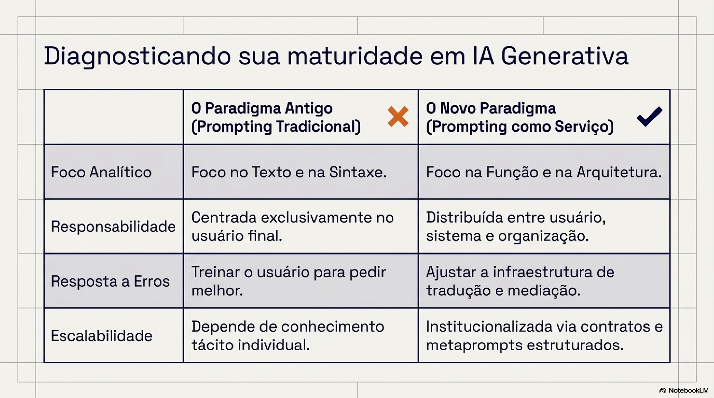
7.1 Prompting como decisão arquitetural
A análise conduzida por meio da SOP e do GenAI Service Blueprint mostra que prompts exercem funções distintas em diferentes camadas do serviço. A consequência é que prompting deixa de ser uma prática operacional localizada e passa a ser uma decisão arquitetural distribuída, com efeitos sobre controle, previsibilidade e responsabilidade que não podem ser compreendidos apenas pela análise do texto do prompt em si (Bitner et al., 2008). Sob essa perspectiva, a qualidade de uma interação baseada em prompts não depende apenas da formulação linguística, mas da arquitetura de mediação na qual essa formulação está inserida. Essa leitura reforça a inadequação de abordagens que tratam a engenharia de prompts como habilidade individual isolada, especialmente em contextos organizacionais onde decisões têm efeitos distribuídos e precisam ser justificáveis (Engeström, 2001).
7.2 Fricção deliberada como estratégia de mediação
O estudo de caso do CPM mostra que a introdução de fricção deliberada pode desempenhar papel produtivo na governança da tradução. Diferentemente de fricções acidentais ou decorrentes de falhas de usabilidade, a fricção deliberada é projetada para apoiar a externalização progressiva da intenção, reduzindo ambiguidades antes da execução pelo modelo. Essa estratégia dialoga diretamente com o Golfo de Envisioning, ao oferecer mecanismos que ajudam usuários a compreender o que é possível, como pedir e o que esperar de sistemas estocásticos (Subramonyam et al., 2024). No Prompt Tutor, por exemplo, perguntas de refinamento não têm como objetivo ensinar "bons prompts", mas redistribuir o esforço cognitivo para um momento anterior à execução, reduzindo retrabalho e variabilidade indesejada.
Contudo, a fricção não é universalmente desejável. A comparação entre instâncias do CPM indica que níveis mais altos de fricção são adequados a tarefas abertas ou exploratórias, enquanto tarefas de baixa tolerância a erro se beneficiam de arquiteturas com maior governança e menor exigência de intervenção do usuário. Essa observação reforça a necessidade de tratar fricção como parâmetro arquitetural contextual, e não como valor intrínseco.
7.3 Governança da tradução e responsabilidade sociotécnica
Ao institucionalizar a tradução como camada governada, sistemas organizacionais de IA generativa tornam explícitas decisões que, de outra forma, permaneceriam implícitas ou distribuídas entre indivíduos. Essa explicitação tem implicações diretas para responsabilidade sociotécnica, pois permite documentar critérios, justificar escolhas e delimitar responsabilidades entre usuários, organização e sistema (Engeström, 1987). A separação entre Tradução (T) e Execução (E) é central nesse processo. Ao reconhecer que a execução permanece probabilística e parcialmente opaca, a governança da tradução desloca expectativas de controle para a camada onde decisões podem efetivamente ser projetadas e auditadas. Isso reduz o risco de atribuir falhas sistêmicas a usuários e de exigir determinismo irrealista de modelos estocásticos (Norman, 1988; Weisz et al., 2024). Na implementação do CPM, ficou evidente que a pergunta "quem assina quando o output dá errado?" raramente tinha resposta antes da camada de Tradução existir como artefato separado. Depois dela, a resposta também não é simples, mas existe um lugar documentado para investigar.
7.4 Implicações para o Design de Serviço
Do ponto de vista do Design de Serviço, os resultados deste trabalho reforçam a necessidade de tratar sistemas de IA generativa como serviços sociotécnicos completos, e não como ferramentas isoladas. A incorporação da SOP e do GenAI Service Blueprint evidencia como prompts, políticas, contratos de interação e mecanismos de controle se articulam ao longo do serviço, atravessando frontstage e backstage (Bitner et al., 2008). Isso amplia o papel do design, deslocando-o da interface para a orquestração de camadas invisíveis que sustentam a interação. Em termos práticos, SOP e GenAI Service Blueprint oferecem uma linguagem comum para decidir onde posicionar tradução, validações e políticas no serviço, reduzindo dependência de improviso individual e facilitando governança explícita.
7.5 Limites da abordagem e riscos conceituais
Apesar de suas contribuições, a abordagem proposta apresenta limites que devem ser reconhecidos. A institucionalização da tradução pode introduzir rigidez excessiva se aplicada de forma indiscriminada, reduzindo autonomia do usuário ou inibindo exploração criativa. Além disso, a centralização de decisões de tradução pode concentrar poder e responsabilidade em artefatos técnicos, exigindo atenção cuidadosa a processos de revisão e accountability organizacional. Há também o risco de reificar instrumentos analíticos, como a SOP, como frameworks normativos, contrariando sua intenção original. Para evitar esse risco, é fundamental que esses instrumentos sejam utilizados como ferramentas de leitura e reflexão, e não como prescrições universais de design (Engeström, 2001).
7.6 Contribuições e posicionamento do trabalho
Conforme anunciado na introdução, as principais contribuições deste trabalho podem ser sintetizadas em três pontos:
- Um enquadramento conceitual que separa Tradução (T) de Execução (E), tornando analisável o que pode ser projetado, governado e auditado em serviços baseados em prompts sem exigir determinismo irrealista da geração;
- Dois instrumentos analíticos derivados, SOP e GenAI Service Blueprint, que classificam funções de prompts por camadas de serviço e tornam visível a mediação entre usuários, organização e modelos;
- Um estudo de caso observacional do Cognitive Prompt Middleware (CPM), com uma instância baseline (Prompt Assistant) e variações arquiteturais, complementado por evidências aplicadas e um protocolo leve de validação.
Essas contribuições posicionam o trabalho no cruzamento entre HCI, Design de Serviço e estudos sociotécnicos, oferecendo uma base conceitual para pesquisas futuras e para práticas organizacionais mais responsáveis no uso de IA generativa.
8. Conclusão
Este trabalho partiu da constatação de que a crescente centralidade da engenharia de prompts no uso organizacional de sistemas de IA generativa tem sido acompanhada por um enquadramento conceitual limitado, que privilegia habilidades individuais e ajustes linguísticos em detrimento de decisões arquiteturais e sociotécnicas. Como contribuição central, o paper propôs a reformulação do prompting como um problema de governança da tradução, deslocando o foco da qualidade do texto do prompt para a arquitetura de mediação que antecede a execução probabilística dos modelos.
A separação analítica entre Tradução (T) e Execução (E) mostrou-se fundamental para distinguir o que se pode projetar e auditar daquilo que permanece inerentemente variável e estocástico, evitando expectativas irrealistas de determinismo (Weisz et al., 2024; Subramonyam et al., 2024). Para operacionalizar esse enquadramento, o trabalho apresentou dois instrumentos analíticos derivados, a SOP e o GenAI Service Blueprint, concebidos não como frameworks normativos, mas como lentes para descrever e comparar práticas reais de prompting em serviços organizacionais (Bitner et al., 2008; Engeström, 1987).
O estudo de caso observacional do CPM demonstrou a plausibilidade operacional dessa abordagem, ilustrando como diferentes escolhas arquiteturais (em termos de fricção, governança e autonomia) podem ser institucionalizadas em contextos reais de uso. O caso reforçou que ganhos de previsibilidade, redução de retrabalho e maior clareza de responsabilidade podem emergir quando a tradução é tratada como camada explícita e governada (Engeström, 2001; Bennett & Checkel, 2014).
Do ponto de vista prático, os resultados sugerem que organizações interessadas em adotar IA generativa de forma responsável devem deslocar investimentos exclusivos em treinamento individual para o design consciente de infraestruturas de tradução, capazes de apoiar externalização de intenção, reduzir variabilidade indesejada e tornar decisões auditáveis. Esse deslocamento não elimina incertezas inerentes à execução probabilística, mas cria condições para reconhecê-las e documentá-las como parte da governança.
Por fim, o trabalho reconhece limitações importantes. A análise é situada, depende de um contexto organizacional específico e usa instrumentos analíticos que não pretendem esgotar a diversidade de práticas possíveis. Ao deslocar o debate de "prompts melhores" para arquiteturas de tradução governada, este trabalho oferece vocabulário e instrumentos para uma discussão que, até aqui, vinha sendo conduzida quase inteiramente sob o registro do letramento individual. Permanecem abertas questões importantes: os efeitos de longo prazo sobre a aprendizagem organizacional, as implicações políticas da centralização da mediação e a transferência da abordagem para domínios fora da curadoria documental. Cada uma delas abre espaço para pesquisas subsequentes.
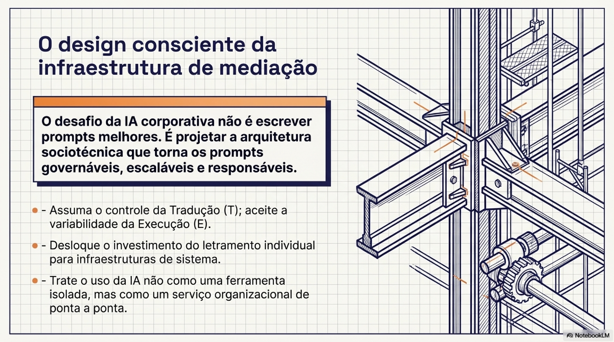
Anexo A — Exemplos ilustrativos de Tradução (T) e Execução (E)
Nota metodológica: Os exemplos apresentados neste anexo têm caráter ilustrativo e visam tornar visível a separação analítica entre Tradução (T) e Execução (E). Eles não constituem evidência de desempenho nem comparação de qualidade entre outputs.
A.1 — Input canônico
Input canônico utilizado nas três instâncias
"Preciso medir a similaridade entre procedimentos bancários de atendimento. Os procedimentos são longos. Cada procedimento pode ter mais de 100k caracteres e isso dificulta bastante."
O input acima é tratado como "canônico" por representar uma classe de tarefas recorrentes em curadoria e padronização organizacional. Ele concentra três fontes típicas de fragilidade em prompting: (i) intenção inicial pouco especificada, (ii) necessidade de critérios verificáveis ("similaridade em que dimensão?") e (iii) restrições de contexto (documentos longos), que exigem decisões de Tradução (T) antes da Execução (E).
A.2 — Instância baseline (Prompt Assistant): Tradução (T) como reformulação + contrato
Função SOP predominante: contrato de interação (linha de visibilidade) + orquestração básica (backstage leve).
Saída de Tradução (T): reformulação + scaffolding + plano
CPM — Prompt Assistant · Saída de Tradução (T)
Perfeito. Vou reformular o seu objetivo em linguagem clara para garantir que vamos criar o prompt ideal:
✅ Objetivo reformulado: Você quer medir a similaridade entre procedimentos bancários de atendimento, mesmo quando os textos são muito longos (acima de 100 mil caracteres). A ideia é comparar pares de procedimentos e retornar uma medida de similaridade, útil para saber se são essencialmente iguais, parecidos ou distintos.
✅ Checklist conceitual:
- Dividir o problema: separar a tarefa em etapas que podem ser executadas por um modelo com limite de contexto;
- Selecionar o tipo de comparação: similaridade semântica, estrutural, por intenção ou passo a passo?
- Adaptar à limitação de tokens: estratégia para lidar com textos com mais de 100k caracteres;
- Definir a métrica de saída: escalar (0 a 1), qualitativo ou ambos;
- Formatar prompt modular: estrutura hierárquica para facilitar adaptações futuras.
🔧 Plano inicial: Vamos criar um prompt que recebe dois procedimentos muito longos (divididos ou resumidos), avalia a similaridade considerando os passos, objetivos e decisões, e gera como saída: um escore de similaridade (0 a 1) e uma justificativa textual curta.
Contrato gerado (Prompt): especificação para Execução (E)
## 1. PAPEL
Você é um analista de processos bancários especializado em comparar procedimentos de
atendimento ao cliente. Sua função é analisar dois procedimentos extensos e indicar
o nível de similaridade entre eles, levando em consideração os objetivos, as etapas
principais, os fluxos de decisão e as instruções operacionais.
## 2. INSTRUÇÕES PASSO A PASSO
2.1 - Leia atentamente os dois procedimentos fornecidos.
2.1.1 - Caso os procedimentos sejam muito longos, utilize os resumos ou trechos-chave
disponíveis.
2.1.2 - Compare os dois procedimentos considerando os seguintes critérios:
2.1.2.1 - Finalidade e objetivo geral do procedimento.
2.1.2.2 - Etapas principais descritas.
2.1.2.3 - Fluxos de decisão (condições, ramificações, exceções).
2.1.2.4 - Atores envolvidos (quem executa o quê).
2.1.2.5 - Ferramentas e sistemas mencionados.
2.1.2.6 - Linguagem ou termos técnicos recorrentes.
2.2 - Atribua um grau de similaridade entre os procedimentos com base nos critérios.
2.3 - Explique brevemente os principais pontos de similaridade e/ou diferença.
## 3. RESTRIÇÕES
3.1 - Não copie trechos dos procedimentos, apenas comente sobre sua estrutura.
3.2 - Mantenha a análise objetiva, concisa e técnica.
3.3 - A pontuação de similaridade deve estar entre 0 (completamente diferentes) e 1
(idênticos em estrutura e objetivo).
3.4 - Caso os textos estejam em formatos diferentes, isso não deve afetar
negativamente a análise, desde que o conteúdo seja equivalente.
## 4. EXEMPLOS
Procedimento A: Atendimento para cancelamento de cartão de crédito, com verificação
de identidade, confirmação de saldo devedor, envio de protocolo e bloqueio no sistema.
Procedimento B: Bloqueio definitivo de cartão, envolvendo autenticação, análise de
pendências financeiras e registro de protocolo.
→ Similaridade: 0.89 | Justificativa: Ambos tratam do cancelamento/bloqueio, seguem
etapas semelhantes e utilizam o mesmo sistema.
## 5. FORMATO DA SAÍDA
{
"similaridade": 0.XX,
"justificativa": "Texto explicativo de até 5 linhas"
}
## 6. INPUT HUMANO
Procedimento A: (... inserir resumo ou texto ...)
Procedimento B: (... inserir resumo ou texto ...)A.3 — Prompt Tutor (fricção deliberada): Tradução (T) por scaffolding de intenção
Função SOP predominante: scaffold cognitivo (backstage) + contrato de interação (linha de visibilidade). A instância Tutor introduz fricção deliberada ao impor um roteiro de elicitação (3 perguntas) antes de gerar o contrato.
Saída de Tradução (T): fricção deliberada por perguntas sequenciais
CPM — Prompt Tutor · Scaffold de intenção (3 perguntas)
Entendi! Esse é um desafio interessante, principalmente pelo tamanho dos textos. Antes de criar um prompt eficaz, vou fazer apenas 3 perguntas para entender melhor o contexto.
Pergunta 1: Qual é o resultado específico que você deseja alcançar com essa medição?
A) Identificar se dois procedimentos são praticamente iguais (duplicados).
B) Encontrar diferenças relevantes entre eles e gerar um resumo comparativo.
C) Criar uma métrica numérica (0 a 1) para indicar o grau de similaridade.
D) Agrupar procedimentos semelhantes em clusters.
Usuário: Encontrar oportunidades de unificação entre 1 e mais roteiros.
Perfeito! Então o objetivo é identificar oportunidades de unificação — não só medir similaridade, mas apontar trechos redundantes e sugerir como consolidá-los.
Pergunta 2: Esses roteiros são estruturados de alguma forma (por exemplo, divididos em etapas, tópicos, títulos) ou são textos corridos?
Usuário: Em seções, mas nem sempre seguindo o mesmo padrão.
Pergunta 3: Qual é o nível de detalhe que você espera na saída?
A) Apenas uma lista das seções similares.
B) Resumo comparativo com sugestão de versão consolidada.
C) Análise detalhada com percentual de similaridade por seção e recomendações.
Usuário: C.
Contrato (Prompt) gerado: especificação resultante da elicitação
### PAPEL
Você é um especialista em análise de textos complexos e otimização de processos
bancários. Sua missão é comparar múltiplos procedimentos de atendimento bancário,
identificar similaridades e redundâncias, e propor oportunidades de unificação.
### INSTRUÇÕES PASSO A PASSO
1. Receba como entrada dois ou mais procedimentos bancários extensos.
2. Divida cada procedimento em seções, mesmo que não sigam um padrão uniforme.
Use títulos, subtítulos ou quebras lógicas para segmentar.
3. Compare as seções entre os procedimentos e calcule uma pontuação de similaridade
(0 a 1) para cada par de seções.
4. Liste as seções com alta similaridade (≥ 0,7) e descreva as diferenças relevantes.
5. Sugira como unificar essas seções em uma versão consolidada.
6. Gere uma análise detalhada com:
- Percentual de similaridade por seção.
- Principais redundâncias encontradas.
- Recomendações de unificação (com exemplos de texto consolidado).
7. Se houver seções únicas ou divergentes, destaque e explique se devem ser mantidas.
### RESTRIÇÕES
- Não omita detalhes importantes do procedimento original.
- Não invente informações que não estejam nos textos fornecidos.
- Mantenha linguagem formal e clara, adequada ao contexto bancário.
- Limite a sugestão consolidada a no máximo 500 palavras por seção.
### FORMATO DA SAÍDA
Relatório estruturado em Markdown:
- Resumo geral da similaridade
- Tabela com seções e pontuação
- Sugestões de unificação
- Observações finais
### INPUT HUMANO
Procedimento A: (... inserir resumo ou texto ...)
Procedimento B: (... inserir resumo ou texto ...)A.4 — SuperPrompt Assistant (instância de alta governança): Tradução (T) como processo governado
Função SOP predominante: controle e validação + mediação organizacional + orquestração de execução (backstage). Transforma a Tradução (T) em um procedimento explícito: define estratégia (segmentar → estruturar → comparar), impõe restrições (privacidade, não invenção), exige rastreabilidade (IDs/chunks) e formaliza verificações.
#### PAPEL
Você é Procedure_Similarity_Analyst, atuando como analista sênior de processos e
compliance bancário + especialista em comparação semântica de textos longos.
Objetivo: medir similaridade entre dois (ou mais) procedimentos de atendimento
bancário muito longos, identificar equivalências e divergências e produzir um
relatório rastreável e acionável para Operações, Qualidade e Compliance.
modo de raciocínio: aprofundado
verbosidade: padrão
formato de saída: json
metaprompt interno: habilitado
#### INSTRUÇÕES PASSO A PASSO
1) Identifique: domínio (produto/serviço), canal, público, e "o que conta como etapa".
2) Normalize o conceito de procedimento para uma estrutura canônica:
- Objetivo / Escopo
- Pré-requisitos / Elegibilidade
- Entradas (documentos/dados)
- Etapas operacionais (passos numerados)
- Decisões/condições (se/então)
- Exceções e tratamento de erro
- SLAs/prazos
- Registros/evidências e auditoria
- Alçadas/aprovações
3) Use estratégia Map-Reduce para documentos extensos:
- MAP: transformar chunks em "fatos estruturados" com IDs (A.S01, A.R01...).
- REDUCE: consolidar por documento, removendo duplicatas.
- COMPARE: alinhar PS_A vs PS_B com classificação por par.
4) Defina métrica composta (0–1):
- Similaridade semântica de temas (S_sem) = 0.35
- Similaridade estrutural de etapas (S_step) = 0.45
- Similaridade de regras/condições/SLAs (S_rule) = 0.20
- Score_final = 0.35*S_sem + 0.45*S_step + 0.20*S_rule
5) Classifique cada par de etapas:
{match_forte, match_parcial, conflita, ausente_em_A, ausente_em_B}
6) Privacidade: não reproduza documentos inteiros. Citações: máx. 300 chars.
Masqueie PII (CPF, conta, telefone, e-mail).
#### RESTRIÇÕES
- Fontes autorizadas: apenas o texto fornecido pelo usuário.
- Não usar conhecimento externo para "preencher" lacunas.
- Não inventar conteúdo; marcar como "evidência insuficiente" quando necessário.
#### FORMATO DA SAÍDA
{
"scope": {"doc_ids": ["A","B"], "assessed_domain": "string"},
"scores": {"S_sem": 0.0, "S_step": 0.0, "S_rule": 0.0, "score_final": 0.0},
"step_alignment": [{
"A_step_id": "A.S01", "B_step_id": "B.S03",
"relation": "match_forte|match_parcial|conflita|ausente_em_A|ausente_em_B",
"impact": "alto|medio|baixo",
"evidence": {"A": [{"chunk_id": "A.C001", "quote": "..."}]}
}],
"top_divergences": [{"title": "string", "impact": "alto|medio|baixo"}],
"risks": [{"risk": "string", "type": "compliance|operacional", "severity": "alta"}],
"recommendations": [{"action": "string", "priority": "P0|P1|P2"}],
"assumptions_and_limits": ["string"]
}
#### INPUT HUMANO
Procedimento A: (... inserir resumo ou texto ...)
Procedimento B: (... inserir resumo ou texto ...)Referências
Citação (BibTeX)
@unpublished{decastro2026governanca,
author = {de Castro, Roc},
title = {Governança da tradução em sistemas de IA generativa: design de serviço
e HCI para interações baseadas em prompts},
note = {Pré-print. Pesquisa independente em andamento},
year = {2026},
url = {https://rocdecastro.github.io/governanca-traducao-genai/}
}